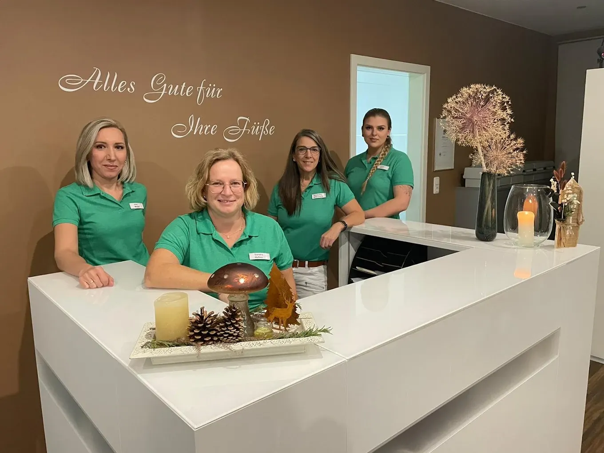
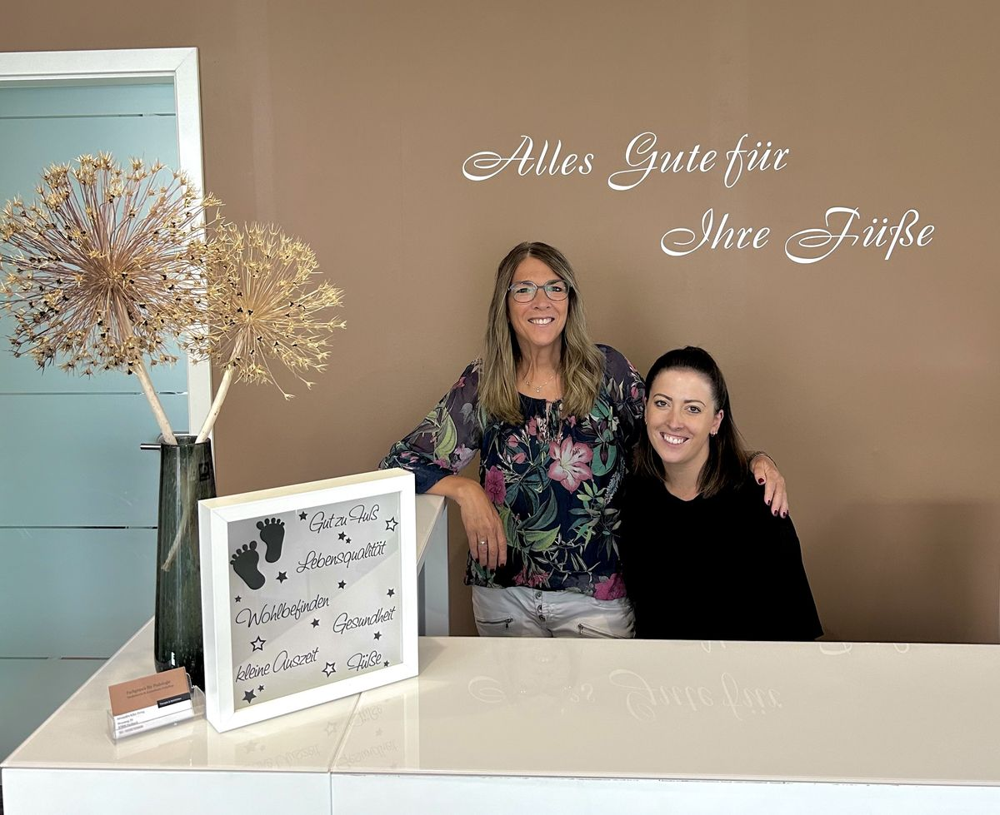

Wir sind spezialisiert auf die Gesundheit und Pflege Ihrer Füße. Unser erfahrenes Team bietet Ihnen professionelle Behandlungen und individuelle Betreuung. Lassen Sie uns gemeinsam Ihre Fußgesundheit verbessern und Ihnen zu schmerzfreien Schritten verhelfen.
Mein Name ist Alexandra Kihn-Fertig, und ich bin seit 1997 Fußpflegerin. Im Juli 2003 habe ich meine Prüfung zur staatlich geprüften Podologin absolviert.
Ich verstehe mein Handwerk nicht nur als Beruf, sondern als Berufung. Es ist für mich etwas ganz Besonderes, jeden Tag Menschen mit meinem fundierten Fachwissen auf ihrem Weg zu gesunden Füßen begleiten zu dürfen.
Hinter unserem Empfang steht ein eingespieltes Team, das Sie von der Begrüßung bis zur Behandlung begleitet. Bei uns treffen fachliche Sorgfalt und ein offenes Ohr aufeinander – damit Sie sich vom ersten Moment an gut aufgehoben fühlen.

Wir freuen uns, Jenny in unserem Team begrüßen zu dürfen! Mit ihrer Unterstützung können wir Ihnen ab sofort noch mehr Zeit und Aufmerksamkeit widmen.
